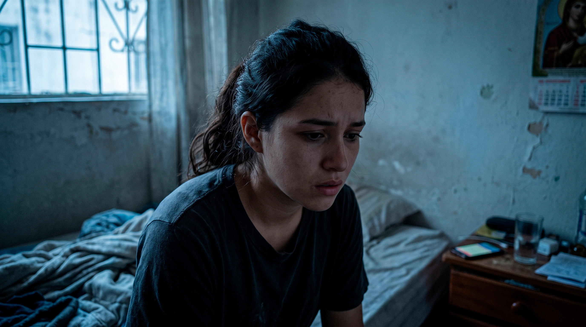

El pecho se te cierra y el corazón retumba en tus oídos. El miedo al fracaso, a la mirada indiferente de los transeúntes y a que tu voz se quiebre en medio de Carabobo te paraliza por un instante. La habitación en penumbras, teñida por la luz azul del amanecer, parece encogerse mientras intuyes que la ciudad afuera ya empezó a moverse sin ti.
Sientes que el aire te falta. Necesitas calmarte antes de salir, así que decides buscar aire fresco asomándote a la terraza, o sentarte en el borde de la cama para abrir el viejo baúl de los recuerdos y buscar refugio en tu historia familiar.